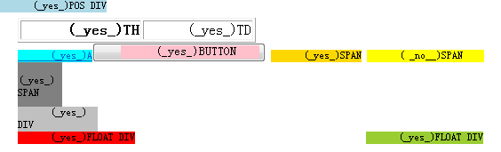
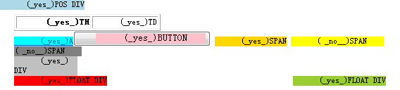
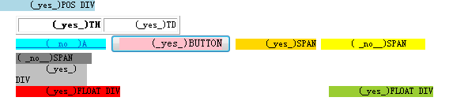
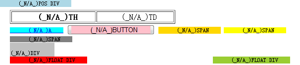

无。
对于全角空格，IE 中凡是会使该浏览器内 hasLayout 属性为 true 的元素内尾部的全角空格均会被忽略。
这个现象会使元素的宽度在 IE 中由于全角空格被忽略而显得比其他浏览器更小，从而造成布局上的差异。
| IE6 IE7 IE8 |
|---|
字符“ ”，即全角空格，其Unicode编号为“U+3000”。IE 对这个符号有着特殊的处理。
关于“空格”的更多信息，请参考 http://zh.wikipedia.org/zh-cn/空格。
IE 中凡是会使该浏览器内 hasLayout 属性为 true 的元素内尾部的全角空格均会被忽略。
分析以下代码：
<body style="font-size:12px; margin:20px;"> <table border='1'><tr><th
class="t">TH</th><td class="t">TD</td></tr></table> <a href="#"
style="background:cyan; zoom:1;" class="t">A</a> <button class="t"><span style="background:pink;">BUTTON</span></button> <span
style="background:gold; display:inline-block;" class="t">SPAN</span> <span style="background:yellow; overflow:hidden;"
class="t">SPAN</span> <span
style="background:gray; width:50px; height:50px;" class="t">SPAN</span> <div style="background:silver; width:90px;" class="t">DIV</div> <div style="background:red;
float:left;" class="t">FLOAT DIV</div>
<div style="background:yellowgreen; float:right;" class="t">FLOAT
DIV</div> <div style="background:lightblue; position:absolute; top:0;
left:0;" class="t">POS DIV</div>
<script> var t = document.getElementsByTagName("*"); var w = []; var has = ""; var a = ""; for
(var i = 0, j = t.length; i < j; i++) { if (t[i].className == "t") { w.push(t[i]); } } for (var i =
0, j = w.length; i < j; i++) { a = w[i].innerHTML; has = ((w[i].currentStyle == undefined) ||
(w[i].currentStyle.hasLayout == undefined)) ? "_N/A_" : ((w[i].currentStyle.hasLayout) ? "_yes_" : "
_no__"); w[i].innerHTML = a.replace(/ /, " (" + has + ")"); } </script> </body>
以上代码分别测试了表格、块级元素、行内元素、浮动的元素、绝对定位的元素、按钮元素标签内包含全角空格的情况，标签内的文字均为“[Some text]”，即两个全角空格与一些字符及两个全角空格。
遍历了文档树内的所有元素，并筛选出 class 属性为“t”的元素，检测其是否是否含有 currentStyle 对象并且 currentStyle.hasLayout
是否为“真”，为真则显示“(true)”，为否则显示“(false)”，hasLayou 属性无效则显示“(N/A)”。
代码在各浏览器中效果如下：
| IE6(Q) IE7(Q) IE8(Q) |  |
|---|---|
| IE6(S) IE7(S) |  |
| IE8(S) |  |
| Firefox Chrome Safari Opera |  |
通过对元素 hasLayout 特性的判断不难发现，上述发生全角空格被忽略的元素都是在该浏览器中触发了 hasLayout 的元素。
即当元素触发当前的 IE 浏览器的 hasLayout 后，其内容文字尾部的所有全角空格被忽略。
避免使用全角空格占位，使用“ ”代替全角空格。
| 操作系统版本: | Windows 7 Ultimate build 7600 |
|---|---|
| 浏览器版本: |
IE6
IE7 IE8 Firefox 3.6.2 Chrome 5.0.356.2 dev Safari 4.0.5 Opera 10.51 |
| 测试页面: | fullwidth_space.html |
| 本文更新时间: | 2010-07-15 |
space full-width 全角 字符 hasLayout